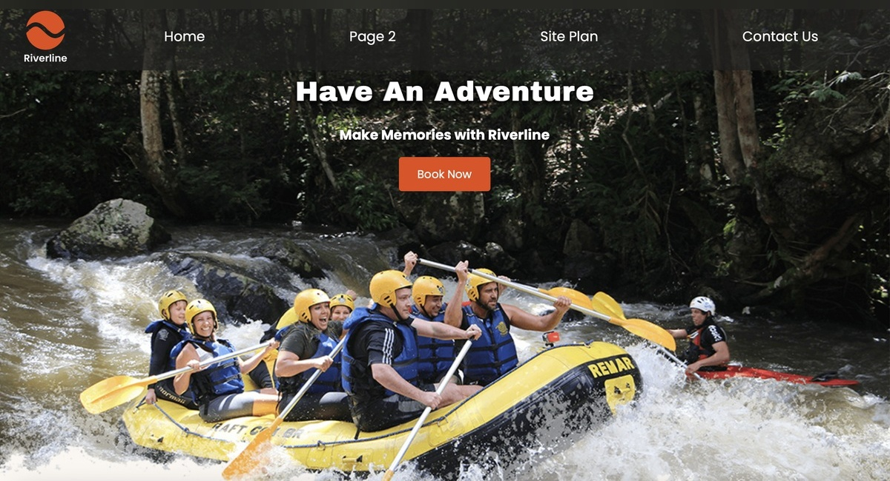
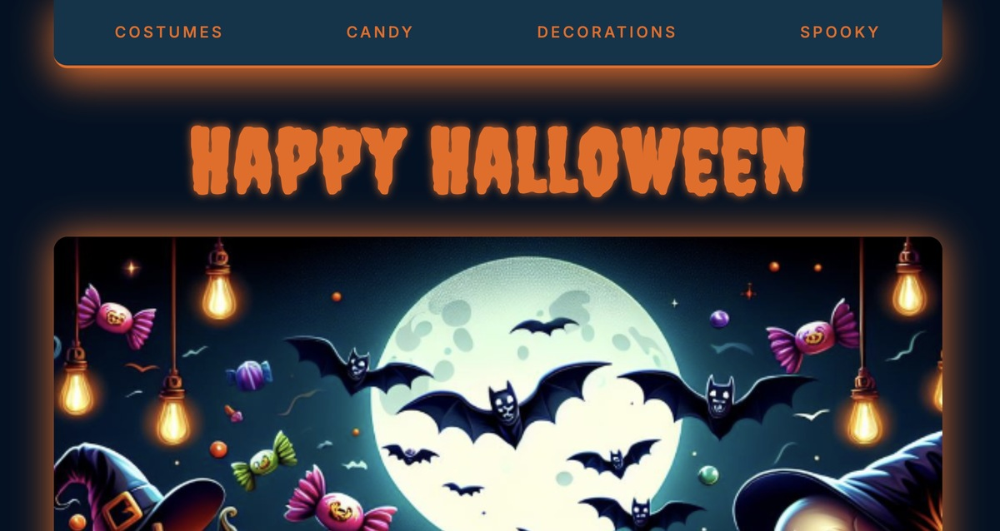
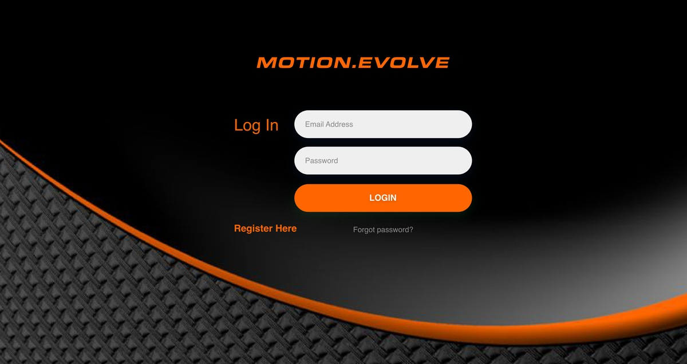

WWR
The Riverline home page for a white water rafting company built from a brief. A full-width action photo, a clear call to action, and a simple menu, show how a layout holds together.
ViewCathy Bisschoff
Designer Learning to Code
A designer's path from architecture and
graphic design into web development.
Explore the projects and exercises built
along the way.
This portal is the home for all the work from WDD 130 Web Fundamentals. Each page, exercise and project is collected here, from the first weekly challenges to the finished portfolio pieces. It shows the progress from a designer's eye to hand-written code.
Read More About Me
The Riverline home page for a white water rafting company built from a brief. A full-width action photo, a clear call to action, and a simple menu, show how a layout holds together.
View
In Class Exercise challenges, the short hands-on tasks done weekly. Each one develops a new HTML or CSS skill, and the understanding gained is valuable preparation for the work that follows.
View
A background in architecture and graphic design, now extended into software development. Including UX and UI work in app and web design from Art 337R Interaction Design.
View| Week | Project | Skill |
|---|---|---|
| 2 | WWR Site Plan and Home Page | Site planning and semantic HTML |
| 3 | WWR More HTML and CSS | Selectors and the box model |
| 4 | WWR Finishing the Home Page | Grid layout and responsive design |
| 5 | ICE Prophet Card | Box model, centering and link styling |
| 5 | ICE Apostle Spotlight | Flexbox, Grid, shadows and hover effects |
| 6 | ICE Favorite Devotional Table | Tables and forms |
| 6 | ICE Holiday Page | Fonts and themed styling |
| 7 | ICE Country Flags Using CSS Grid | Grid alignment and layouts |
| 7 | ICE CSS Positioning Activity | Grid, float and z-index layering |
| 8 | ICE Big Image Gallery | Image optimization and thumbnails |
| 8 | ICE Signup Form Design | Form styling with Grid |
Anyone interested in the work shown here, or in a design or web project, may get in touch. Messages sent with the form on this page are welcome.